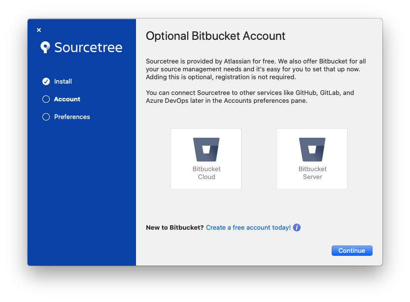
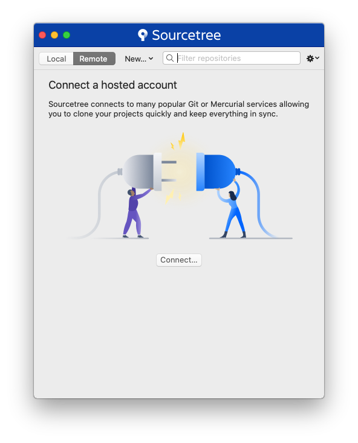
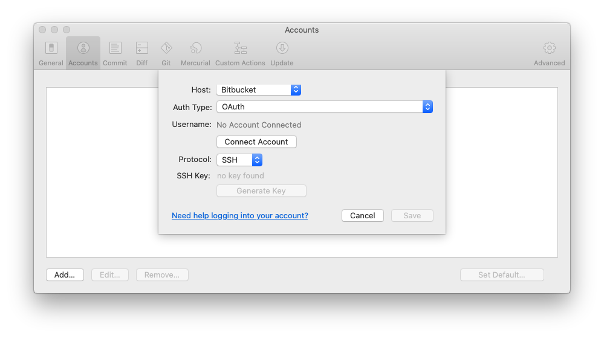
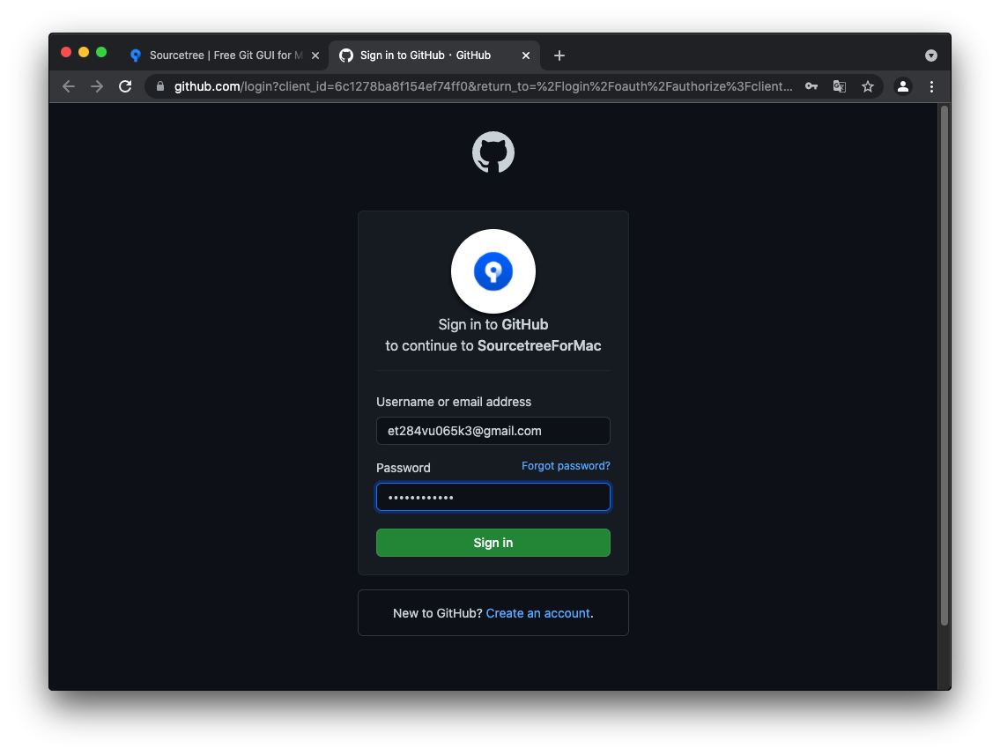
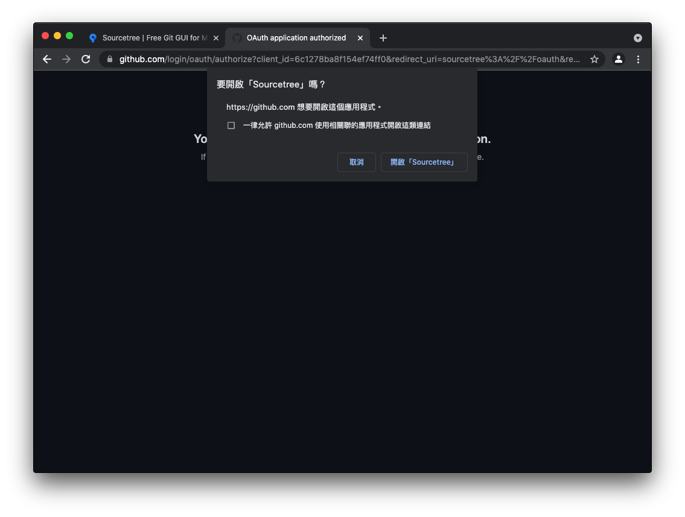
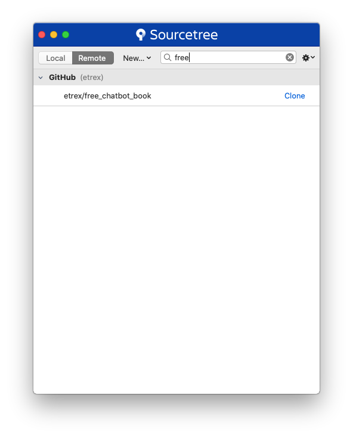
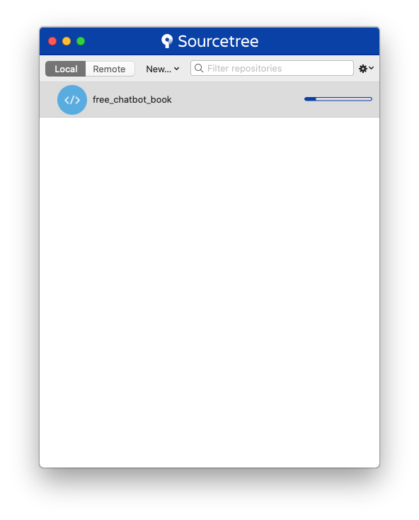
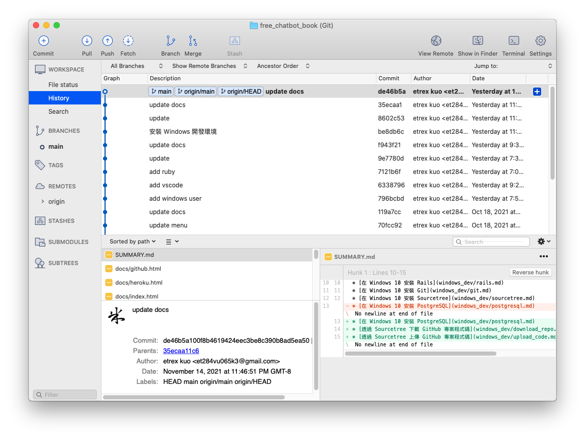

在 MacOS Catalina 安裝 Sourcetree
開啟網頁 https://www.sourcetreeapp.com/：

點擊 Download for Mac OS X：

勾選同意條款後，按下 Download，下載後解壓縮，並且丟入應用程式資料夾下，雙擊啟動 Sourcetree：

點擊 打開：

點擊 Continue：

勾選 Set global author details for Git and Mercurial 後，輸入名稱以及 email：

點擊 Done：

點擊 Connect...：

點擊 Add...：

將 Host 改為 GitHub，並且將 Protocol 改為 HTTPS：

點擊 Connect Account：

登入 GitHub 帳號。

點擊 Authorize atlassian 授權 GitHub 權限給 Sourcetree：

點擊 開啟「Sourcetree」：

點擊 Save：

已完成與 GitHub 的連結，點擊左上角紅點點關閉此畫面：
下載程式碼
在 Sourcetree 的 Remote 分頁可下載程式碼，在以下這個範例我下載的專案名稱為 free_chatbot_book：

點擊 Clone：

在這個畫面可以設定下載目的地，預設的目的地是在用戶根目錄下。
再次點擊 Clone 後，畫面會切換到 Local，並且開始下載程式碼：

下載完成後點擊進入，會看到以下畫面：
